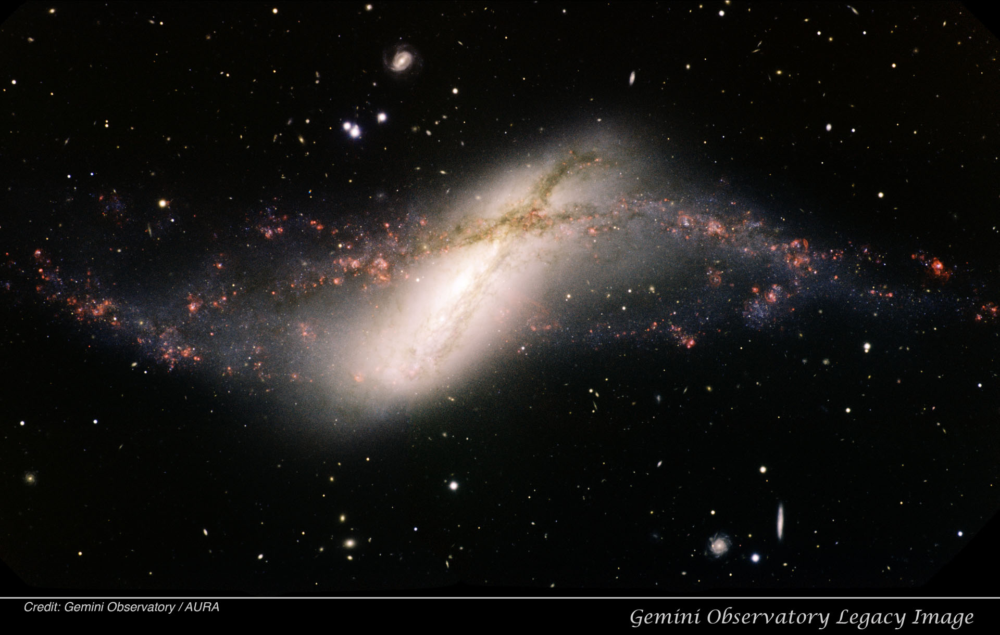
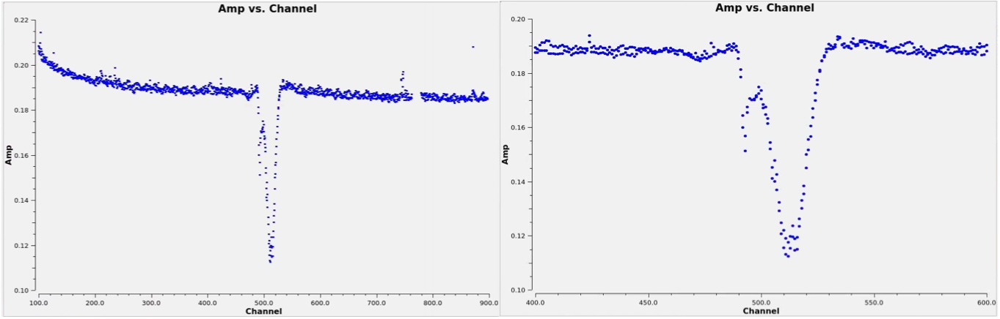

NGC 660: HI Absorption Imaging
Data required
In this tutorial we will image absorption from the central region of a nearby starburst galaxy NGC 660.
The data we use are taken using the European VLBI Network (EVN) telescopes under the project code: EA054. We shall use the self-calibrated data for this tutorial since you have learnt imaging and self-calibrating the continuum data in the previous tutorials. The steps followed for self-calibration are similar to (although not exact) what you learnt in the imaging tutorials.
One difference to keep in mind while making continuum images using spectral-line data is: if the spectral line is strong (i.e. visible in the usual plotms before continuum subtraction), then you should exclude those channels while making the continuum images.
The calibrated measurement set and the continuum image can be downloaded using the link below:
Alternatively, you can download and un-tar the data from the command line:
wget https://www.jb.man.ac.uk/ERIS26/data/ERIS26_sp_line_ngc660.tar.gz
tar -zxvf ERIS26_sp_line_ngc660.tar.gzAfter downloading the data, verify that the measurement set is available in your working directory before proceeding.
Table of contents
- Absorption Lines
- HI 21-cm Line
- NGC 660
- Inspect the data
- Determine the channels containing the line feature
- Continuum Subtraction
- Rest frequency, reference frame and velocity type
- Creating a Dirty Cube
- Inspecting the cube
- Mask creation
- Producing the Final Cube
- Analysing the Final Cube
- Moment Maps
- Position-Velocity (PV) diagrams
- Exporting the Results
1. Absorption Lines
Unlike TW Hya, this dataset contains a spectral line observed in absorption rather than emission.
Observing an absorption line requires the presence of a bright background continuum source. Continuum imaging is therefore often an essential first step in absorption-line studies. The foreground gas absorbs a fraction of the background continuum emission at frequencies corresponding to the spectral transition, producing the absorption feature. In extragalactic radio astronomy, the continuum source is often a radio source associated with AGN activity (jets, lobes or the core).
2. HI 21-cm Line
Neutral atomic hydrogen (HI) is the most abundant element in galaxies and serves as one of the most important tracers of the interstellar medium. The HI 21-cm line is produced when the spins of the proton and electron flip from a parallel to an anti-parallel configuration. Although the transition is intrinsically very rare, the enormous abundance of hydrogen in galaxies makes the line readily observable with radio telescopes.
The rest frequency of the HI line is 1420.405751 MHz and it is one of the most widely used tracers of galaxy structure and dynamics. HI observations have been used to map the gas distribution in galaxies, measure galaxy rotation curves, study galaxy interactions and provide some of the earliest evidence for the existence of dark matter through the unexpectedly flat rotation curves observed in spiral galaxies.
In many nearby galaxies the HI line is observed in emission. However, if a bright radio continuum source lies behind the gas, the HI line can instead be seen in absorption. In this case the foreground atomic hydrogen absorbs a fraction of the continuum emission at the HI transition frequency.
Absorption-line observations are particularly powerful because they allow us to probe gas that may be too faint to detect in emission. The depth, velocity and spatial structure of the absorption provide information about the density, kinematics and distribution of the gas along the line of sight.
In active galaxies, HI absorption studies have become an important tool for investigating gas in the immediate vicinity of the central supermassive black hole. Such observations can reveal inflowing gas that may be feeding the active galactic nucleus (AGN), as well as outflowing gas being driven by jets or accretion activity.
3. NGC 660

NGC 660, the target we will work on, is a very rare polar-ring galaxy located in the Pisces constellation. The HI absorption arises against a compact radio source at the galaxy centre. The centre of this source has intense star forming activity, so intense that the galaxy is classified as a star-burst galaxy. Recently, in 2008, a radio source appeared in the nuclear region, suggesting an onset of AGN activity. The EVN observations you will work on were made to study the gas surrounding this newly active radio source. The data are published by Argo et al. (2015).
4. Inspect the data
Before imaging any spectral-line dataset it is important to understand the data. The first step is therefore to inspect the measurement set and determine:
- The science target.
- The number of spectral windows.
- The total number of channels.
- The central observing frequency.
- The antenna configuration (how many antennas are present?).
Some of this information will be useful for the subsequent steps.
In CASA
listobs(
vis='ngc660.ms',
)
5. Determine the channels containing the line feature
Before producing a spectral cube we must determine which channels contain the absorption line. We also need to identify channels that are free of line absorption because these will later be used to fit and subtract the continuum.
A convenient way to do this is to average the visibilities and plot amplitude as a function of channel number/frequency/velocity (i.e. a spectrum).
In CASA
plotms(
vis='ngc660.ms',
xaxis='channel',
yaxis='amp',
avgspw=False,
avgtime='1e9',
avgscan=True,
avgbaseline=True,
scalar=True,
showgui=True,
)
The spectral line appears as a dip with respect to the continuum level. Note the channel range occupied by the absorption line and identify channels that appear free of line absorption on either side of the feature.
To zoom-in and look at the absorption better:
In CASA
tget plotms
spw='0:400~600' # Or any other channel range.
The line is quite wide, spanning almost 50 channels. We could consider averaging the channels to reduce the computation time in the later stages.
Furthermore, notice that the edge channels show non-linear behaviour. Since we are only interested in studying the absorption line, we can safely exclude the edge channels and work only with the channel range 250 to 700.

In CASA
linefree='0:250450;550700'
These line-free channels will be used for continuum subtraction in the next step.
Also, note that the continuum emission in this case is a first order polynomial with a slope (unlike TW Hya which had slope=0).
6. Continuum Subtraction
As earlier, to study the absorption line, we first need to subtract the continuum emission from the data.
We therefore fit a continuum model using the line-free channels identified in the previous section and subtract this model directly in the visibility domain.
Note, here we use fitorder=1 to accommodate a non-zero slope in the fitting.
In CASA
os.system('rm -rf ngc660.contsub*')
uvcontsub(
vis='ngc660.ms',
outputvis='ngc660.contsub.ms',
datacolumn='data',
fitspec=linefree,
fitorder=1,
writemodel=False,
)
In CASA
plotms(
vis='ngc660.contsub.ms',
xaxis='channel',
yaxis='Real',
avgspw=False,
avgtime='1e9',
avgscan=True,
avgbaseline=True,
showgui=True,
scalar=False,
spw='0:250~700',
)
The continuum-subtracted data should now have an average amplitude close to zero in the line-free channels. We are plotting only the channel range that was used for continuum subtraction. See what happens if you plot the full range.
Here we plot the Real component of the visibility rather than the amplitude. Try plotting 'amp' along y-axis instead and compare the resulting spectrum. What information is lost? An absorption feature appears as a negative contribution to the visibility. Plotting the amplitude would remove the sign information and make absorption appear as emission!
7. Rest frequency, reference frame and velocity type
The rest frequency of the HI-21cm line is 1420.405751768 MHz. Although CASA parameter in tclean is called restfreq, for HI absorption studies of such sources, the standard practice is to input the redshifted line frequency. In our case, NGC 660 has z=0.002842 and the corresponding redshifted HI-21cm frequency is 1420.40575/(1+z)= 1416.380396911976 MHz. After this choice, 0 km/s in the spectrum/cube represents the systemic velocity of the galaxy. If we are to choose the laboratory transition frequency, the velocities we obtain will include the recession velocity (we will do that in the next tutorial).
In CASA
rstfrq='1416.380396911976MHz'
Since NGC 660 is an extragalactic source, we further use:
outframe='BARY'
veltype='optical'Check the introduction page for an explanation.
8. Creating a Dirty Cube
Now we are ready to image the cube. Many of the parameters used for creating a cube are similar to what you used while creating a continuum image. The main difference is, while creating the continuum image you averaged all the channels together. However, here you are going to make an image of each channel (or a few channels averaged together) to obtain a three dimensional data product where the third dimension is the velocity axis.
Earlier we saw that the absorption line is very wide (almost 50 channels). Therefore, to reduce the computation time, let us average 2 channels together while making the cube (width=2). We start at channel 250 (start=250), end at 700. So after averaging 2 channels together, we will end up with a total of 225 channels in total (nchan=225).
Before performing any deconvolution it is often useful to examine the 'dirty cube'.
A dirty cube is produced by Fourier transforming the visibilities without applying any CLEAN iterations. Many of the parameters used for creating a cube are similar to what you used while creating a continuum image. The main difference is, while creating the continuum image you averaged all the channels together. However, here you are going to make an image of each channel (or a few channels averaged together) to obtain a three dimensional data product where the third dimension is the velocity axis.
This allows us to:
- Estimate the image noise.
- Inspect the quality of the data.
- Determine which channels contain absorption (even the weak absorption channels we may have missed in the plotms inspection earlier).
- Decide on an appropriate cleaning strategy.
The logic behind choosing a few parameters used below such as the imsize and cell are the same as what you learnt in continuum imaging. Can you tell us why we have chosen cell=0.0018arcsec? What about the choice of imsize?
Finally, when we study the absorption profile, we always do it with respect to the background continuum emission. This is because absorption happens only when there is a background bright source. Since in radio astronomy we can vary the resolution of the final data products by tweaking the imaging parameters, we need to be sure we make the cube at the same spatial resolution as the continuum image.
In CASA
imhead(
imagename='ngc660.cont.image'
)
Take a note of the restoring beam. We will use the same for the cube.
In CASA
beam=['0.0285065arcsec','0.0159238arcsec','-25.9153deg']
In CASA
os.system('rm -rf ngc660.dirty.cube.*')
tclean(
vis='ngc660.contsub.ms',
imagename='ngc660.dirty.cube',
spw='0',
specmode='cube',
perchanweightdensity=True,
nchan=225,
start=250,
width=2,
outframe='BARY',
restfreq=rstfrq,
veltype='optical',
deconvolver='hogbom',
gridder='standard',
imsize=[320, 320],
cell='0.0018arcsec',
weighting='briggsbwtaper',
robust=0.5,
restoringbeam=beam,
interactive=False,
niter=0,
pbcor=True
)
9. Inspecting the cube
First we would like to check the beam size, velocity resolution etc of the cube.
In CASA
imhead(
imagename='ngc660.dirty.cube.image.pbcor',
)
Next we check the RMS noise in the line free channels. This provides a quantitative estimate of the sensitivity of the observations and will guide the choice of stopping threshold during CLEANing.
The imstat task calculates basic statistical properties of an image, including the mean, maximum value and RMS noise.
In CASA
imstat('ngc660.dirty.cube.image', chans='1~20')
Measure the RMS noise in several more channels or channel ranges that appear free of absorption. The values should be broadly consistent from channel to channel.
In CARTA
Open the dirty cube in CARTA and examine the absorption channel by channel just like you did for TW Hya in the previous exercise.
Questions to consider:
- In which channels is the absorption visible?
- Is the absorption compact or extended?
- Is the absorption detected at high significance?
The answers to the above questions will help determine the cleaning strategy and mask placement.
A common approach, when the spectral line is strong, is to clean to approximately three times the RMS noise level. A threshold significantly above the noise may leave absorption in the residual image, while cleaning too deeply risks introducing artefacts. If the line is very weak, we do not clean at all.
Since the line is strong, in this tutorial we adopt:
$\mathrm{threshold} = 3\times\mathrm{RMS} = 1.8\,\mathrm{mJy}$
In CASA
thrshld='1.8mJy'
10. Mask creation
One last step before producing the final cube is to create a mask to define the region to be cleaned. As mentioned earlier, absorption happens only against a continuum source. So in this case, we use CARTA to create a 'region' file defining the boundaries of the continuum source and use that as a mask for cleaning.
You have the continuum image of NGC660: ngc660.cont.image. Load that in CARTA, create contours and then create a region defining the outmost contour. Demonstration shown in the video below:
11. Producing the Final Cube
Having inspected the dirty cube, estimated the noise level and identified the absorption channels, we can now perform a full deconvolution.
We will use non-interactive cleaning here using the threshold and a common mask created using CARTA. It works very well in this case as the spatial distribution is simple (it is almost unresolved). In case of more complicated spatial structures, it is recommended to use a good mask.
For those cases, if you are running CASA on a Linux machine, you may choose
interactive=True
in tclean and draw the masks specifically around the regions of absorption in the viewer (see the video in TW Hya).
Unfortunately, this feature is no longer available for MacOS users. It is possible to generate more sophisticated masks for CLEANing on MacOS as well as Linux using other software packages and then use it in such cases. Ask the tutors if you want to know more!
In CASA
os.system('rm -rf ngc660.final.cube.*')
tclean(
vis='ngc660.contsub.ms',
imagename='ngc660.final.cube',
spw='0',
specmode='cube',
perchanweightdensity=True,
nchan=225,
start=250,
width=2,
outframe='BARY',
restfreq=rstfrq,
deconvolver='hogbom',
gridder='standard',
imsize=[320, 320],
cell='0.0018arcsec',
weighting='briggsbwtaper',
robust=0.5,
restoringbeam=beam,
interactive=False,
niter=100000,
threshold=thrshld,
mask='ngc660.cube.mask',
pbcor=True
)
12. Analysing the Final Cube
The final science product is the primary-beam-corrected cube:
ngc660.final.cube.image.pbcor
Once again check that the properties of the cube are as desired. Use imhead to inspect the basic properties of the cube (resolution, velocity resolution, number of channels, velocity type, etc).
In CASA
imhead(
imagename='ngc660.final.cube.image.pbcor',
)
Begin by measuring the RMS noise in several line-free channels.
Next, inspect the cube in CARTA. Explore the data both spatially and spectrally:
- Use animator to look at the cube through different channels.
- Does the absorption vary spatially as you move through different channels? Is the absorption spatially resolved?
- Extract spectra from different pixels, from different regions using shapes (or boxes) and then also extract the integrated absorption profile.
- Identify the velocity range of absorption.
- Does the spectral profile change spatially or does it remain the same?
These simple exploratory analyses will already yield the first scientific insights from a spectral-line dataset.
13. Moment Maps
Let us now create moment maps. For TW Hya, we used the CASA task immoments. To demonstrate another approach, let us use CARTA for this case.
First determine the maximum depth of absorption and the velocity range containing the absorption line. Then generate the moment maps as shown in the demonstration below:
Also see the CARTA moment map documentation for more details.
14. Position-Velocity (PV) diagrams
PV diagrams are powerful tools to determine gas kinematics when the gas is spatially resolved. These plot the velocity of gas measured along any axis we define. To generate a PV diagram in CASA, first load the cube and then draw the axis along which you want to extract the diagram. Then use the PV option on the menu bar and generate the diagram.
NOTE: It is a bug in CARTA that you see the velocity labelled as 'radio' even when you choose 'optical' velocity. However the velocities themselves are fine!
15. Exporting the Results
Although CASA stores images in its own native format, the FITS format remains the most widely used standard for astronomical data exchange.
Exporting the continuum image, spectral cube and moment maps to FITS allows the data to be analysed using external software packages, archived and shared with collaborators.
In CASA
exportfits(
imagename='ngc660.cont.image',
fitsimage='ngc660_cont.fits',
overwrite=True,
)
In CASA
exportfits(
imagename='ngc660.final.cube.image.pbcor',
fitsimage='ngc660_cube.fits',
velocity=True,
overwrite=True,
)
Similarly export the moment maps and the PV diagrams.
Other Related Pages
Introduction page.
ALMA data on N₂H⁺ emission from a protoplanetary disc.
VLBA data on H₂O maser emission.